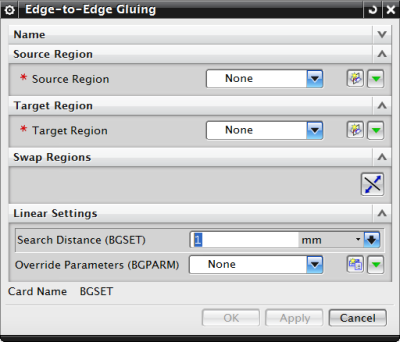

使用边到边粘连命令连接两条边可以防止所有方向上的相对运动。NX Nastran 粘连连接是连结不同网格的简单有效方法。
可以使用边到边粘连命令来定义以下选定元素之间的粘连连接：
2D 单元边 (CQUAD4, CQUAD8, CQUADR, CTRIA3, CTRIA6, CTRIAR)。
2D 轴对称单元边 (CTRAX3, CQUADX4, CTRAX6, CQUADX8)。
多边形边。
注释：如果选择多边形边来定义源单元边或目标单元边，则软件会将粘连应用于与这些边关联的 2D 单元。
使用边到边粘连命令时：
正在粘连边的单元必须近乎与该边相切。例如，两个垂直单元的边无法粘连。
使用 2D 轴对称单元，可以在 XY 平面或 XZ 平面中定义单元。
要将一条边粘连到另一条边，首先必须定义粘连定义的源区域和目标区域。区域是希望发生粘连或发生接触的一段模型中单元边的集合。使用仿真区域命令定义受粘连条件影响的区域。
使用边到边粘连命令，可以选择 2D 单元的边来定义源边和目标边。
求解模型时，NX Nastran 在定义的源区域和目标区域之间生成粘连单元。粘连单元就像刚性弹簧一样连接、约束边和曲面。NX Nastran 始终使用类似于焊接用途的公式创建这种连接。这对应于 BGPARM 模型数据输入项的 GLUETYPE=2 选项。
粘合边上的节点不一定要重合。
